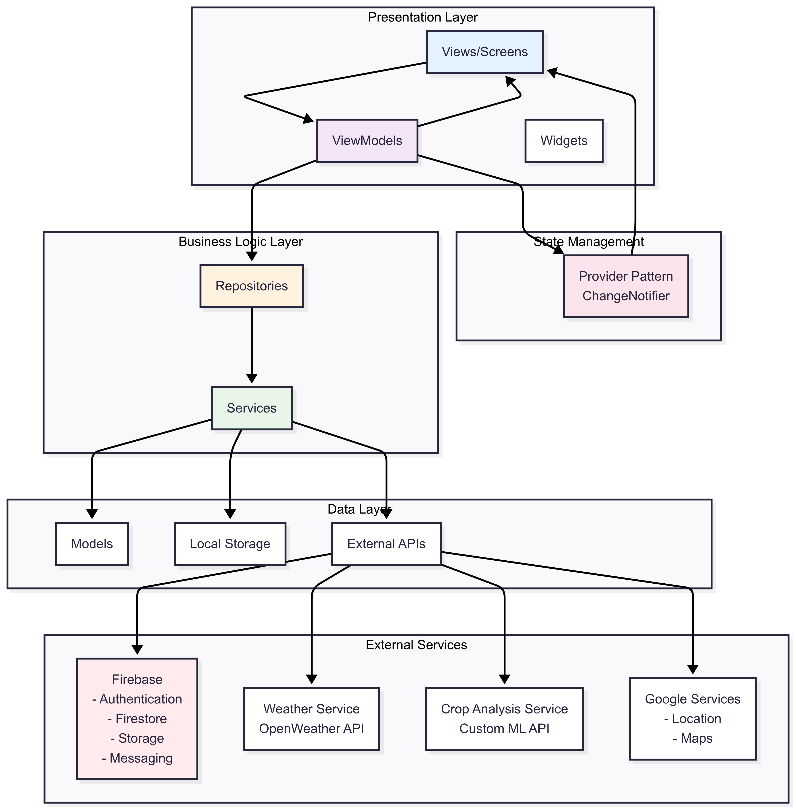

AgrimB
AgrimB is an AI-powered agricultural marketplace that digitizes the crop procurement lifecycle by connecting farmers and buyers through an intelligent mobile platform. The application combines AI-based crop quality analysis, real-time weather intelligence, location-aware marketplace discovery, structured visit scheduling, and cloud-powered communication into a unified ecosystem. Built with Flutter using Clean Architecture and MVVM, AgrimB integrates Firebase, machine learning services, and external APIs to improve transparency, efficiency, and decision-making throughout agricultural commerce.

Why It Matters
Agricultural trading is often hindered by fragmented communication, inconsistent crop quality evaluation, limited market visibility, and inefficient coordination between buyers and farmers. Purchasing decisions are frequently made without reliable quality insights, localized weather information, or structured transaction workflows, leading to uncertainty and operational inefficiencies.
AgrimB addresses these challenges by building an intelligent digital ecosystem for agricultural commerce. The platform combines AI-powered crop quality assessment, weather forecasting, GPS-based location services, multilingual accessibility, real-time notifications, and structured marketplace workflows into a single application. Instead of functioning solely as a marketplace, AgrimB enables data-driven agricultural decision-making by providing buyers with actionable insights while simplifying the complete buying journey — from crop discovery and inspection to scheduling, negotiation, and deal completion.
Engineering Focus
- Clean Architecture & MVVM — Designed using a layered architecture that separates Presentation, Business Logic, and Data layers, ensuring maintainability, scalability, and testability.
- Reactive State Management — Implements the Provider pattern with ChangeNotifier for efficient dependency injection and responsive UI synchronization across complex user workflows.
- AI-Powered Crop Analysis — Integrates a custom machine learning inference service capable of analyzing crop images, detecting healthy and defective seeds, and generating automated crop quality assessments before transactions.
- Cloud-Native Backend Integration — Utilizes Firebase Authentication, Firestore, Cloud Storage, and Firebase Cloud Messaging to deliver secure authentication, cloud storage, real-time synchronization, and notification delivery.
- Location & Weather Intelligence — Integrates OpenWeather APIs with Google Location Services to provide localized weather forecasts and environmental insights that directly influence agricultural planning and purchasing decisions.
- Marketplace Workflow Automation — Digitizes the complete procurement lifecycle, including crop discovery, visit scheduling, verification, negotiation, document management, and transaction completion.
- Cross-Platform Engineering — Built with Flutter, enabling deployment across Android, iOS, Web, Windows, macOS, and Linux while maintaining a shared codebase and consistent user experience.
Engineering Highlights
- AI-powered crop quality assessment using a custom machine learning inference API.
- Enterprise-grade Flutter application built on Clean Architecture with MVVM principles.
- Secure cloud infrastructure powered by Firebase Authentication, Firestore, Storage, and Cloud Messaging.
- Intelligent weather forecasting integrated with OpenWeather APIs for agriculture-aware decision support.
- GPS-enabled marketplace powered by Google Maps and Location Services.
- End-to-end agricultural marketplace covering crop discovery, scheduling, verification, negotiation, documentation, and deal completion.
- Modular service-oriented architecture enabling independent integration of AI, weather, authentication, storage, notifications, and external APIs.
- Multilingual support with English and Hindi localization to improve accessibility across diverse farming communities.
- Reusable component architecture with repository pattern, service abstraction, and scalable state management for long-term maintainability.